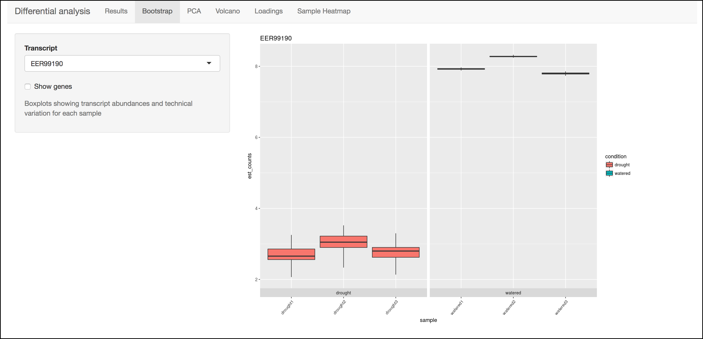
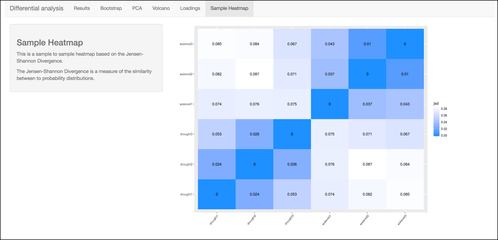

Walkthrough of DNA Subway Green Line: Kallisto/Sleuth RNA-Seq¶
The Green Line runs within CyVerse DNA Subway and leverages powerful computing and data storage infrastructure and uses the supercomputer cluster to provide a high performance analytical platform with a simple user interface suitable for both teaching and research. is a quick, highly-efficient software for quantifying transcript abundances in an RNA-Seq experiment. Even on a typical laptop, Kallisto can quantify 30 million reads in less than 3 minutes. Integrated into CyVerse, you can take advantage of CyVerse DNA Subway to process your reads, do the Kallisto quantification, and analyze reads with the Kallisto companion software in an R-Shiny app.
Some things to remember about the platform
- You must be a registered CyVerse user to use Green Line.
- The Green Line was designed to make RNA-Seq data analysis "simple". However, we ask that users thoughtfully decide what "jobs" they want to submit. Each user is limited to a maximum of 4 concurrent jobs running on Green Line.
- A single Green Line project may take a week to process since HPC computing is subject to queues which hundreds of other jobs may be staging for. Additionally these systems undergo regular maintenance and are subject to periodic disruption.
Note
New, faster Green Line
Green Line is now running on Jestream Cloud. This should greatly reduce queue times (The entire running time for this tutorial is about 60 minutes). We have designed Green Line for a lower number of concurrent users (<50), and still recommend teaching using jobs you have made public, and only running the entire workflow when you are working with novel data. Please let us know about your experience: send feedback.
Important: Discontinued Support for Tuxedo Workflow
The Tuxedo workflow previously implemented for the Green Line will has been removed in June 2019. Data and previously analyzed results will still be available on the CyVerse Data Store, however it is not possible to execute new analyses which include Tuxuedo.
Sample Data
How to use provided sample data
In this guide, we will use an RNA-Seq dataset ("Zika infected hNPCs"). This experiment compared human neuroprogenetor cells (hNPCs) infected with the Zika virus to non-infected hNPCs. You can read more about the experimental conditions and methods in this reference. Where appropriate, a note (in this orange colored background) in the instructions will indicate which options to select to make use of this provided dataset.
Sample data citation: Yi L, Pimentel H, Pachter L (2017) Zika infection of neural progenitor cells perturbs transcription in neurodevelopmental pathways. PLOS ONE 12(4): e0175744. reference.
Video Course
Here is a video series on analyzing data with DNA Subway using the above Zika dataset and lesson:
DNA Subway Green Line: Kallisto/Sleuth - Create an RNA-Seq Project to Examine Differential Abundance¶
A. Create a project in Subway
- Log-in to - unregistered users may NOT use Green Line.
- Click on the Green "Next Generation Sequencing" square to start a Green Line project.
-
For 'Select Project Type' select either "Single End Reads" or "Paired End Reads".
Sample Data
"Zika infected hNPCs" dataset: Select Paired End Reads
4. For 'Select an Organism' select a species and genome build.
Sample Data
"Zika infected hNPCs" dataset: Select Homo sapiens - Ensembl 78 GrCh38
5. Enter a project title, and description; click 'Continue'.
Tip
If you don't see a desired species/genome contact us to have it added.
B. Upload Read Data to CyVerse Data Store The sequence read files used in these experiments are too large to upload using the Subway internet interface. You must upload your files (either .fastq or .fastq.gz) directly to the CyVerse Data Store.
- Upload your reads to the CyVerse Data Store using Cyberduck. See instructions: Data Store Guide.
Note
This step is not directly connected with DNA Subway. You can use any data uploaded to the CyVerse Data Store.
Data Limit
There is a limit of 6GB per file for samples on Green Line. For larger file sizes, you may wish to use the Kallisto tools in the CyVerse Discovery Environment. See the for more information.
DNA Subway Green Line: Kallisto/Sleuth - Manage Data and Check Quality with FASTQC¶
A. Select and pair files
- Click on the "Manage Data" step: this opens a Data store window that says "Select your FASTQ files from the Data Store" (if you are not logged in to CyVerse, it will ask you to do so).
-
Click on the folder that matches your CyVerse username and Navigate to the folder where your sequencing files are located.
Sample Data
"Zika infected hNPCs" dataset: Select Sample Data.
-
Select the sequencing files you want to analyze (either .fastq or .fastq.gz format).
Sample Data
"Zika infected hNPCs" dataset: You will be presented with the following 8 files; check-select all of the files and click the
+ Add filesbutton:- SRR3191542_1.fastq.gz
- SRR3191542_2.fastq.gz
- SRR3191543_1.fastq.gz
- SRR3191543_2.fastq.gz
- SRR3191544_1.fastq.gz
- SRR3191544_2.fastq.gz
- SRR3191545_1.fastq.gz
- SRR3191545_2.fastq.gz
The SRR3191542 and SRR3191543 files are 2 replicates (paired-end) of the uninfected cells and the SRR3191544 and SRR3191545 file are from the Zika infected cells.
-
If working with paired-end reads, click the
Pair Mode OFFbutton to toggle to on; check each pair of sequencing files to pair them.Sample Data
"Zika infected hNPCs" dataset: Right reads end in "_1" and left reads end in "_2". Click the
Pair Mode OFFbutton to turn pairing on, and check-select each of the paired samples (e.g. SRR3191543_1.fastq.gz and SRR3191543_2.fastq.gz).
B. Check sequencing quality with FastQC
It is important to only work with high quality data. is a popular tool for determining sequencing quality.
Tip
This step takes place in the same Manage data window as the steps above.
-
Once files have been loaded, in the 'Manage Data' window, click the 'Run' link in the 'QC' column to run FastQC.
Note
There is a limit of 4 concurrent jobs. These jobs should take less than 20 minutes to complete (depending on file size) and you may need to let several jobs finish before proceeding. If you have previously processed reads for quality, you can skip the FastQC step.
2. One the jobs are complete, click the 'View' link to view the results.
Tip
You can see a description and explanation of the FastQC report on the CyVerse Learning Center and a more detailed set of explanations on the website.
DNA Subway Green Line: Kallisto/Sleuth - Trim and Filter Reads with FastX Toolkit¶
Raw reads are first "quality trimmed" (remove poor quality bases off the end(s) of a read) and then are "quality filtered" (filter out entire poor quality reads) prior to aligning to the transcriptome. After trimming and filtering, FastQC is run on the trimmed/filtered files.
-
Click "FastX ToolKit" to open the FastX Toolkit panel for all your data.
-
For each file, under 'Basic', Click 'Run' to filter the reads using default parameters or click 'Advanced' to run with desired parameters; repeat this process for all the FASTQ files in your dataset.
Sample Data
"Zika infected hNPCs" dataset: The quality of the reads in this dataset is relatively good. You can skip the FastX Toolkit step for this dataset.
Tip
The 'Basic' setting for FastX Toolkit uses the same settings as the defaults in the 'Advanced' run:
- quality_trimmer: minimum quality: 20
- quality_trimmer: minimum trimmed read length: 20
- quality_filter: minimum quality: 20
- quality_filter: minimum quality: 50
-
Once the job completes, click the 'View' link to view a generated FastQC report.
- Since you may trim reads multiple times to achieve the desired quality of data record the job IDs (e.g. fx####) that you wish to use in the subsequent steps.
DNA Subway Green Line: Kallisto/Sleuth - Quantify reads with Kallisto¶
Kallisto uses a 'hash-based' pseudo alignment to deliver extremely fast matching of RNA-Seq reads against the transcriptome index (which was selected when you created your Green Line project). A Kallisto analysis must be run for each mapping of RNA-Seq reads to the index. In this tutorial, we have 12 fastQ files (6 pairs), so you will need to launch 6 Kallisto analyses.
The Science Behind Kallisto
You can find a detailed video series on the science behind the Kallisto software and pseudoalignment: [YouTube](https://www.youtube.com/playlist?list=PL-0S9LiUi0vhjynujVZw34RKmUo6vPmVd).
-
Click the "Quantification" step and enter a sample and condition name for each of your samples. You will typically have several replicates (at least 3 minimum) for each sample. For your condition, our implementation of the Kallisto/Sleuth workflow supports two conditions.
Warning
When naming your samples and conditions, avoid spaces and special characters (e.g. !#$%^&/, etc.). Also be sure to be consistent with spelling.
Sample Data
"Zika infected hNPCs" dataset:
We suggest the following names for this dataset:Left/Right Pair Sample name Condition SRR3191542_1.fastq.gz
SRR3191542_2.fastq.gzMock1-1 Mock SRR3191543_1.fastq.gz
SRR3191543_1.fastq.gzMock2-1 Mock SRR3191544_1.fastq.gz
SRR3191544_2.fastq.gzZIKV1-1 Zika SRR3191545_1.fastq.gz
SRR3191545_2.fastq.gzZIKV2-1 Zika -
After naming the samples and conditions, click the
Submitbutton to submit a job. Typically, within ~1 minute you will be provided with a job number. The job will be entered into the queue at the TACC Stampede supercomputing system. You can come back and click the Quantification stop to see the status of the job. The indication for the quantification stop will show "R" (running) while the job is running.Sample Data
"Zika infected hNPCs" dataset: Under parameters uncheck the Build pseudo-bam files option.
Tip
You can select some of the advanced options for your Kallisto job by clicking the "Parameters" link in the Quantification stop. See more about these advanced parameters in the Kallisto manual.
DNA Subway Green Line: Kallisto/Sleuth- Visualize data using IGV¶
In the "View Results" steps you have access to alignment visualizations, data download, and interactive visualization of your differential expression results.
- Click the "View results" step and choose one of the following options:
IVG - Integrated Genome Viewer
Tip
IGV visualization will only be possible if you have built pseudo-bam files in the Kallisto step.
Click the icon in the "IGV" column to view a visualization of
your reads pseudoaligned to the reference transcriptome. You will need
to click the Make it public
button (and possibly be re-directed to the CyVerse Discovery
Environment). After making the data "public" which allows DNA Subway
to access your files on the CyVerse Data Store, you must also select a
memory size to launch this Java application. If you are not sure of
which value to select, use the default 750MB option.
Warning
Using IGV requires Java software. Java is increasingly unsupported for security reasons on the internet.
Java Help
Java must be available and enabled in your Internet browser to use the IGV function. Java frequently is the source of security vulnerabilities and so its not uncommon to experience configuration issues due to safety. Follow the tips below to configure Java for your computer. Alternatively, you can use the Download link (see instructions in the section below) to download your data (you will need the .bam and .bam.bai files) and download and install yourself.
Internet Browser
We highly recommend using Firefox as your browser for DNA Subway.
- Verify your Java availability for your browser: Java test
- Java must be enabled in your browser
Java Configuration
- Open the Java control panel on your computer. (On Mac, open System
Preferences > Java. On PC, open Control Panel > Programs >
Java.)
- Click the Security tab and check "Enable Java in the browser" and set the security level for applications to "high". Add "http://dnasubway.cyverse.org" and "http://gfx.dnalc.org" to the "Exception Site List" in the Java Security tab.
Download Data - Abundance
Click the folder icon to be redirected to the CyVerse Discovery Environment (you may be required to log in). You will be directed to all outputs from you Kallisto analysis. You may preview them in the Discovery Environment or use the path listed to download the files using Cyberduck (see Data Store Guide). A tab-separated file of abundances for each sequence pair is available at the download link.
DNA Subway Green Line: Kallisto/Sleuth- Visualize data using Sleuth¶
Differential analysis - Shiny App
Click the "Sleuth R Shiny" link to launch an interactive window which contains data and graphics from your analysis.
R Shiny App Walkthrough
The R Shiny App allows you to explore your differential expression results as generated by the . We will cover highlights to for each menu in the app.
Data Transfer Timings
It can take a few minutes for data to be transferred to the R Shiny server after the quantification step completes. If R Shiny does not load, try again in a few minutes. If you still have an issue, use the link and include your project number in the feedback form.
Results Menu

This menu is an interactive table of your results. You can choose which columns to display in the table using the checkboxes on the left of the screen. Several important values selected by default include:
- Target_id: This is the name of the transcript (gene) from the selected reference transcriptome.
- qval: This is a corrected (for multiple testing) p-value indicating the significance test of differential abundance. Lower numbers indicate greater significance.
- b: This is an estimate of the fold change between the conditions
- ext_gene: If available, these are gene names pulled from Ensemble
Tip
Click the Download button to download these results.
Bootstrap

This menu will display a box plot that indicates the difference in expression between conditions. The box plots themselves indicate variation between replicates as estimated by bootstrap sampling of the reads. A dropbox enables you to select any transcript. Clicking the "Show genes" will load alternative gene names if available.
Tip
Right-click a graph to download this and other images.
PCA

This graph displays principle components of each of the conditions/replicates. In general replicates of the same condition should cluster closely together.
Volcano Plot

This scatter plot displays all transcripts colored by significance of differential abundance. You may also use menu on the left of the screen to highlight specific genes/transcripts or previously set filters from the results menu.
Loadings
This barplot indicates which genes/transcripts explain most of the variance computed in the principle components analysis.
Heatmap

This heatmap gives a measure of the similarity between the possible comparison of the samples and their replicates.
Summary: Together, Kallisto and Sleuth are quick, powerful ways to analyze RNA-Seq data.
Fix or improve this documentation
- Search for an answer: CyVerse Learning Center
- Ask us for help: click the Intercom icon
 on the lower right-hand side of the page
on the lower right-hand side of the page - Report an issue or submit a change: Github Repo
- Send feedback: learning@CyVerse.org